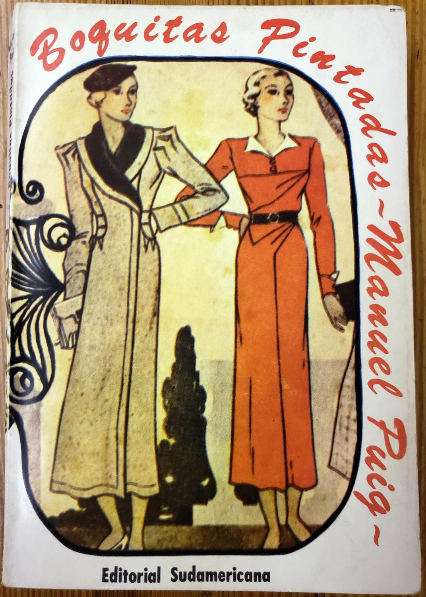
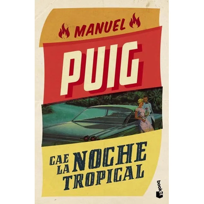
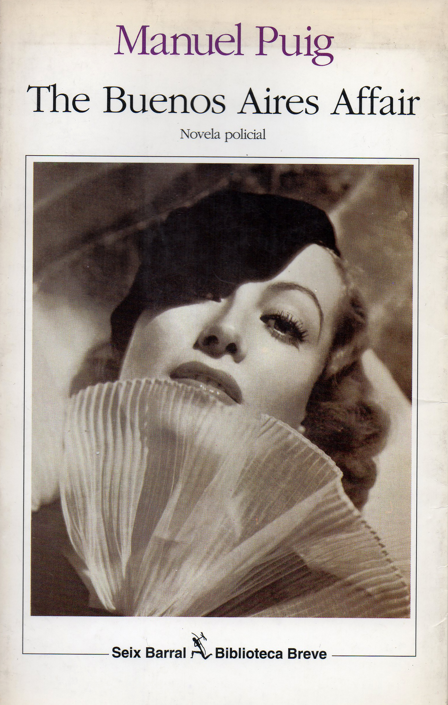
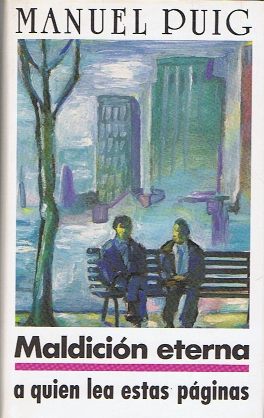
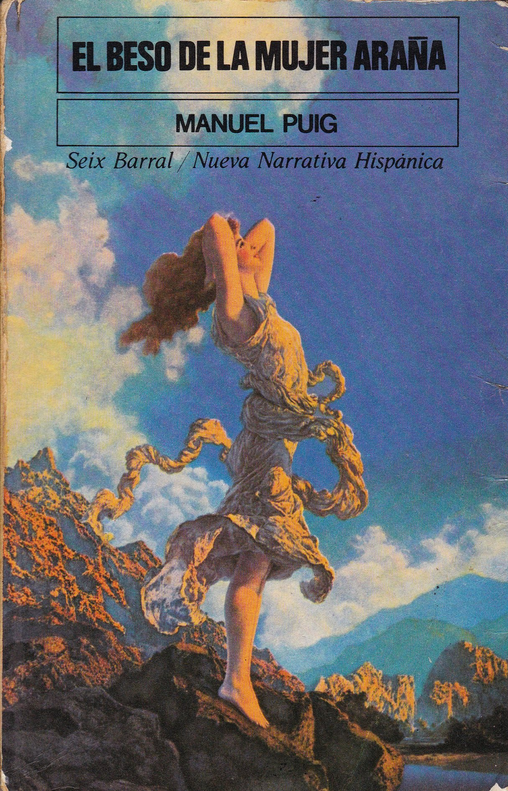
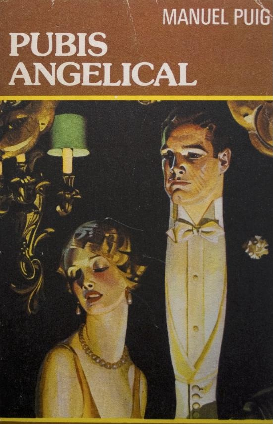
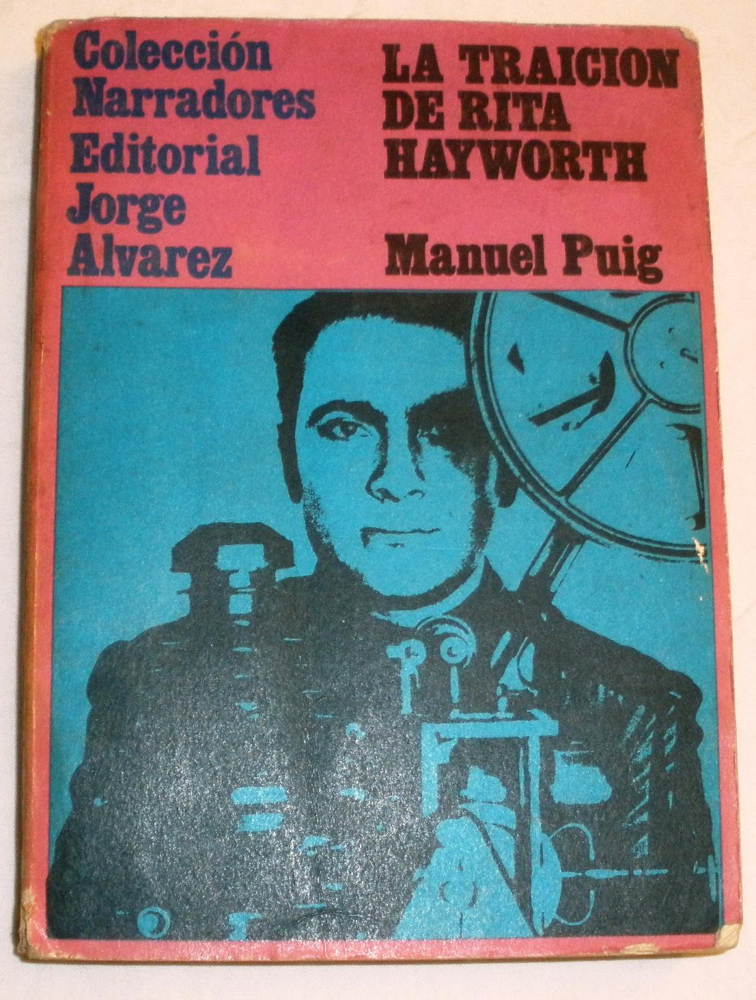

Sus productos literarios son una mezcla de experimentación y de pop porque elige implicar al lector con los personajes de tal modo que encuentre una identificación con alguno en particular de tal modo que sin querer termine dándole su toque personal, ese ser popular.






